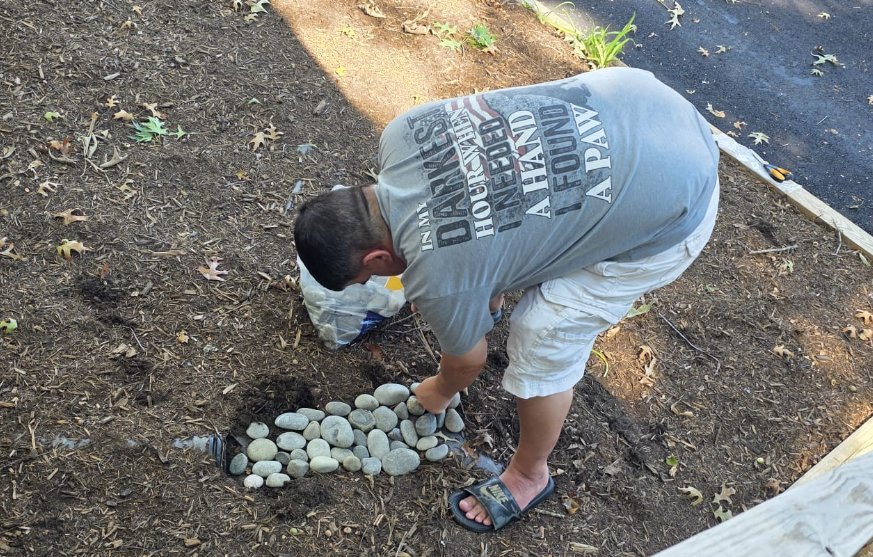
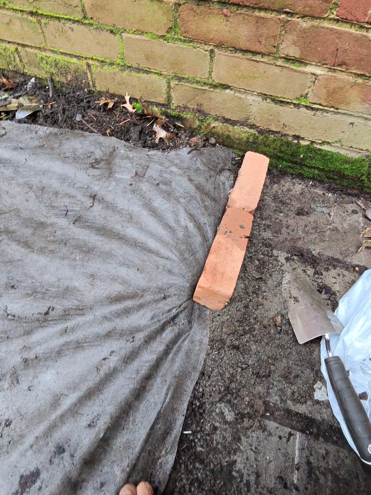
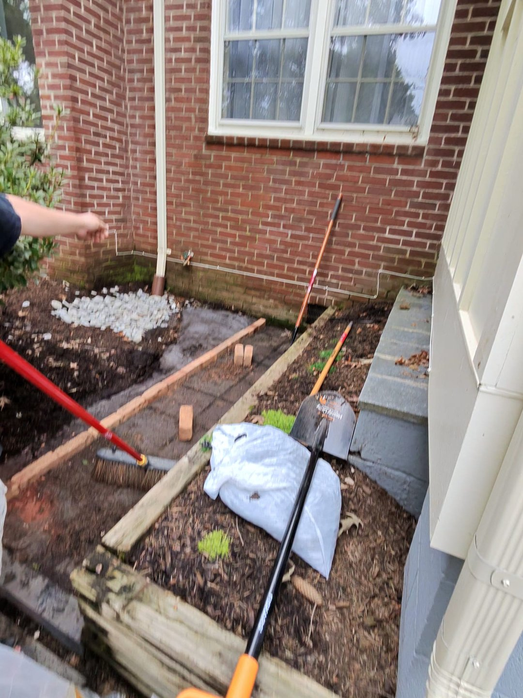

The Walkway That Disappeared!
Sunderland has an abundance of mature trees, which means enormous quantities of falling leaves. Even with gutter guards, leaves accumulate, particularly at the house's many corners. During heavy rain, water spills over the clogged areas instead of flowing properly through the downspouts.
The result? Soil and mulch get washed away.
So Ronan and I went to Lowe's and purchased twelve bags of decorative rocks, approximately five cubic feet altogether, to help protect the ground around the downspouts.

But one particularly troublesome corner needed more attention.
I got down on my hands and knees and began scraping away the accumulated soil and mulch. Beneath it, I uncovered the existing walkway and its weed-control fabric.
I stretched the fabric back toward the edges of the paving, while Ronan brought bricks from behind the Studio to hold everything in place.
I appointed myself Masonry Chief, with Ronan as my very capable assistant.


Less than two hours later, the walkway was visible again, neatly bordered with bricks, with decorative stones protecting the area around the downspout.
And what a satisfying transformation!
Unfortunately, I was so eager to get started that I forgot to take a proper “before” photograph. You'll just have to take my word for it—the walkway really had disappeared!